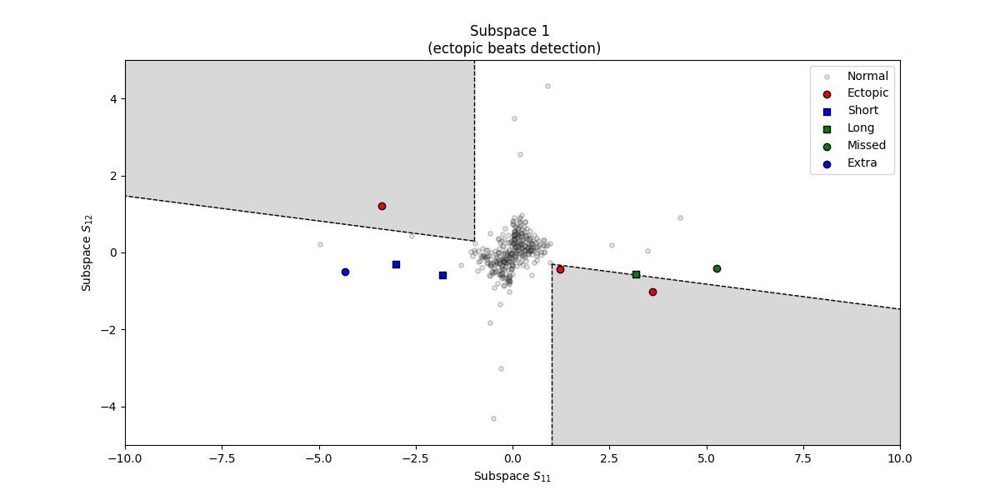
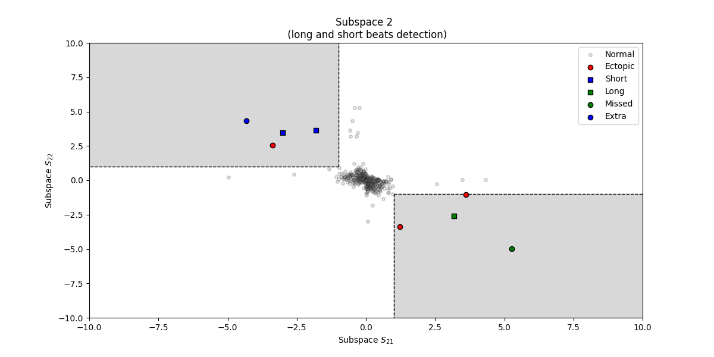

Note
Go to the end to download the full example code.
Outliers and artefacts detection#
This example shows how to detect ectopic, missed, extra, slow and long long from RR or pulse rate interval time series using the method proposed by Lipponen & Tarvainen (2019) [1].
# Author: Nicolas Legrand <nicolas.legrand@cas.au.dk>
# Licence: GPL v3
from systole.detection import rr_artefacts
from systole.plots import plot_subspaces
from systole.utils import simulate_rr
RR artefacts#
The proposed method will detect 4 kinds of artefacts in an RR time series: Missed R peaks, when an existing R component was erroneously NOT detected by the algorithm. * Extra R peaks, when an R peak was detected but does not exist in the signal. * Long or short interval intervals, when R peaks are correctly detected but the resulting interval has extreme value in the overall time-series. * Ectopic beats, due to disturbance of the cardiac rhythm when the heart either skip or add an extra beat. * The category in which the artefact belongs will have an influence on the correction procedure (see Artefact correction).
Simulate RR time series#
This function will simulate RR time series containing ectopic, extra, missed, long and short artefacts.
rr = simulate_rr()
Artefact detection#
outliers = rr_artefacts(rr)
Subspaces visualization#
You can visualize the two main subspaces and spot outliers. The left pamel plot subspaces that are more sensitive to ectopic beats detection. The right panel plot subspaces that will be more sensitive to long or short beats, comprizing the extra and missed beats.
plot_subspaces(rr, figsize=(12, 6))
- 
- 
(<Axes: title={'center': 'Subspace 1 \n (ectopic beats detection)'}, xlabel='Subspace $S_{11}$', ylabel='Subspace $S_{12}$'>, <Axes: title={'center': 'Subspace 2 \n (long and short beats detection)'}, xlabel='Subspace $S_{21}$', ylabel='Subspace $S_{22}$'>)
References#
Total running time of the script: (0 minutes 0.370 seconds)